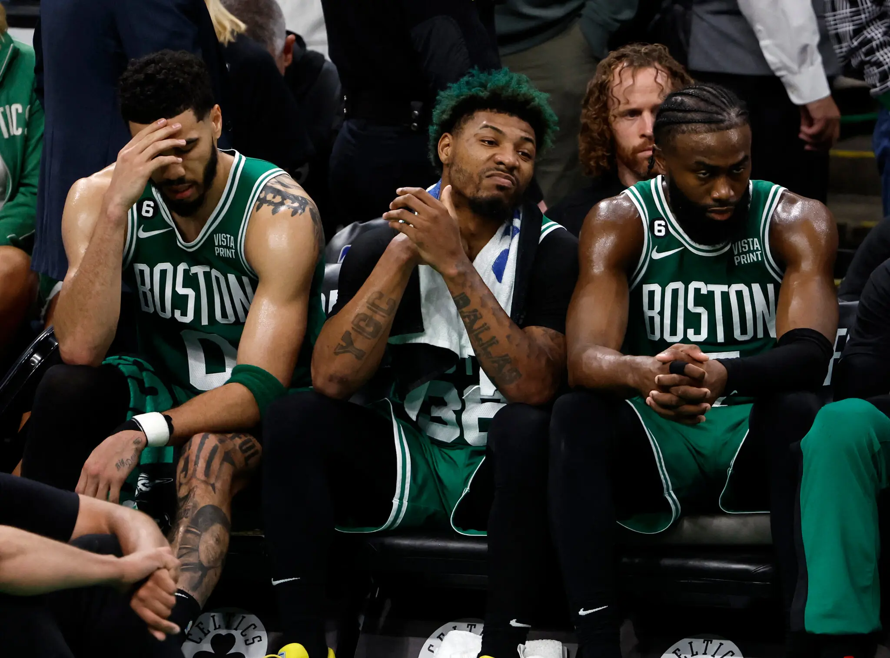
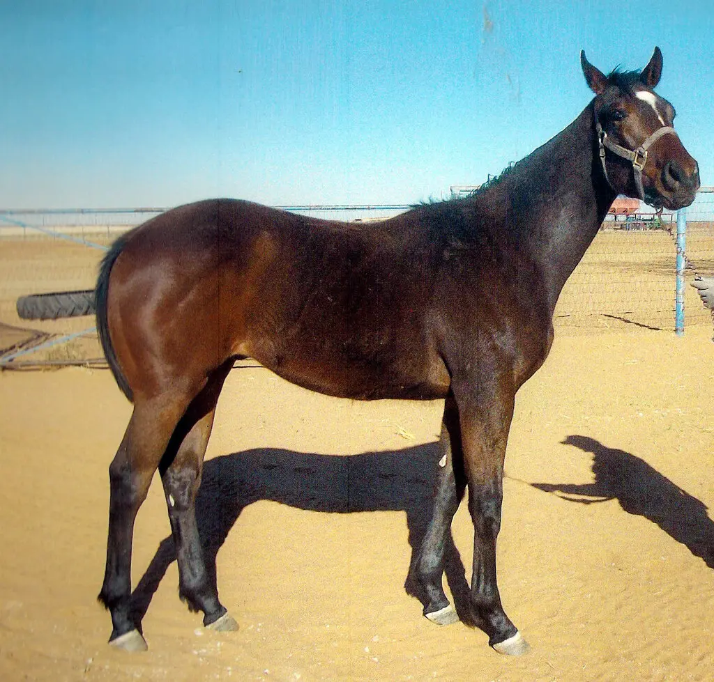
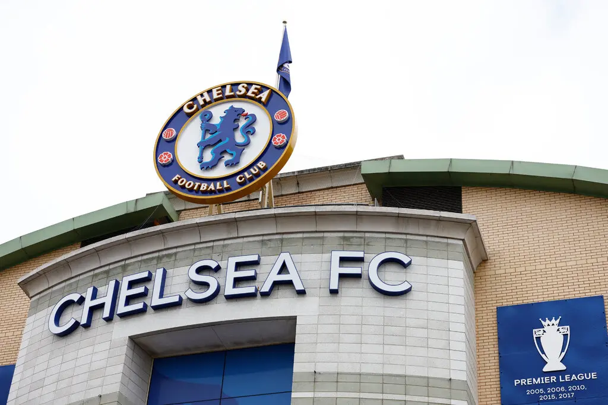

Home Page
Sport Articles

Celtics

Wild On Ice, shown as a yearling, qualified for the Kentucky Derby but was euthanized on April 27 after he injured his leg while training at Churchill Downs

Andrew Boyers/Action Images, via Reuters